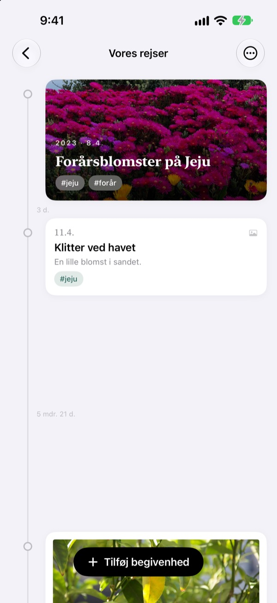
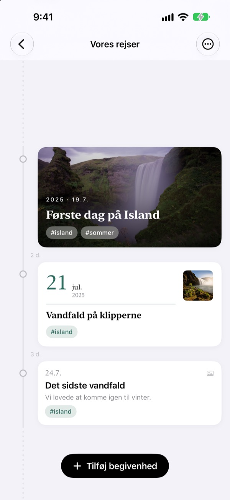
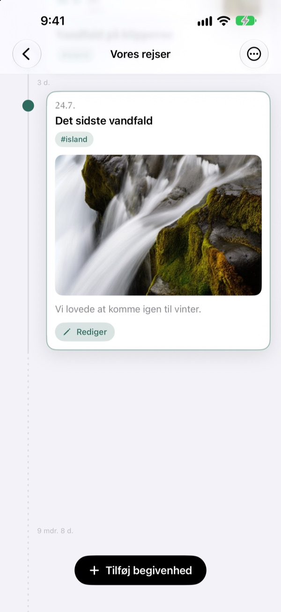
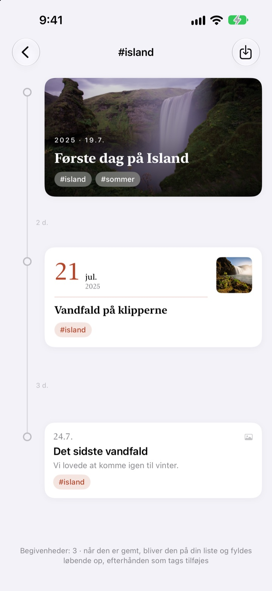
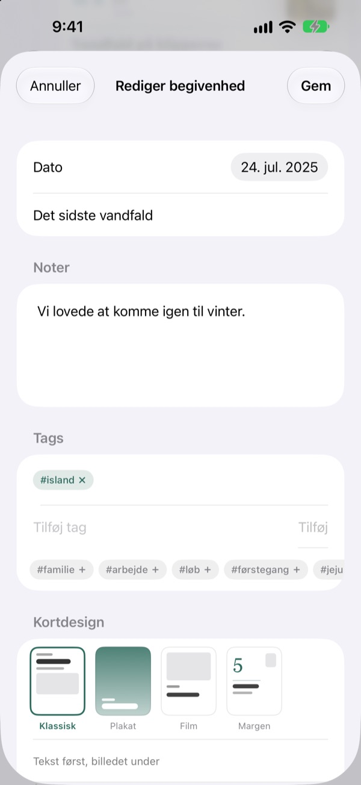

En tidslinje,
der strækker sig med tiden
Tre dage og fem dage står i forholdet 3:5. En lang pause som to år og fire måneder foldes sammen til en stiplet linje. Bare ved at se på afstandene kan du mærke, hvordan tiden gik.
Alle funktioner er gratis. Til iPhone og iPad.

Træk afstandene ud selv
Hver knap tilføjer en ny begivenhed efter den sidste. Afstandene følger samme regel som i appen.
Dit fotobibliotek viser ikke tiden
Fotobiblioteket stiller alt op efter dato, men tre dage og to år fylder det samme ene trin. Yeoul sætter begivenheder lige så langt fra hinanden, som tiden imellem dem, så du med det samme ser, hvornår der skete meget, og hvornår der var stille.
Afstanden er tiden
Hele tidslinjen har én skala: Samme periode er lige lang overalt på skærmen. Ved hver afstand står den ægte varighed, fx 3 d. eller 5 mdr. 21 d.
Begivenheder, der ligger meget tæt, får stadig lidt luft, og meget lange pauser foldes sammen til en stiplet linje.

Den finder billederne fra den dag
Vælg datoen og tryk på Find relaterede billeder for at se, hvad du tog den dag. Intet der passer? Med Find selv vælger du selv.
Tryk på en begivenhed på tidslinjen, så folder billede og tekst sig ud lige dér.

Ét tag samler spredte øjeblikke
Giv begivenheder et tag som #Island, tryk på det, og alle begivenheder med det tag fra alle dine tidslinjer samles i en ny.
Gem den, så bliver den på din liste og tager selv nye begivenheder med samme tag med.

Det rette kort til hvert øjeblik
Klassisk sætter teksten først, Plakat fylder kortet med billedet, Film rammer det ind som et aftryk, og Margen lader en stor dato stå i centrum. Forhåndsvisningen skifter med det samme.

Kom i gang på tre trin
- 1
Opret en tidslinje
Barnets første år, et forhold, en rejse: hver med sit navn og sin farve.
- 2
Tilføj begivenheder
Skriv dato og titel, og sæt et billede fra dagen på.
- 3
Giv dem tags
Begivenheder med samme tag samles på tværs af tidslinjer.
Fire kortdesign
- Klassisk
- Teksten først, billedet nedenunder.
- Plakat
- Billedet fylder hele kortet med en stor titel ovenpå. Uden billede bruges tidslinjens farve.
- Film
- Et billede med kant som et aftryk, skrivemaskineskrift og datostempel.
- Margen
- Et stort datotal og et lille billede. Her er det ordene, der har hovedrollen.
En ny begivenhed starter med samme design som det nyeste kort i tidslinjen.
Alle funktioner er gratis
Gratis
- Så mange tidslinjer du vil, med navn og farve
- Billeder, historier og tags på hver begivenhed
- Find billeder fra begivenhedens dag
- Gemte tag-tidslinjer
- Fire kortdesign
- iCloud-synkronisering mellem iPhone og iPad
- Registrér med Genveje og Siri
Støt udvikleren
- Vælg en lille, mellem eller stor drikkepenge
- Det låser ikke noget op. Det er bare en måde at sige tak på
Du finder det i appens indstillinger, når du har lyst.
Ingen reklamer, intet abonnement.
Ofte stillede spørgsmål
Hvorfor er afstandene mellem begivenhederne så forskellige?
Yeoul sætter begivenheder lige så langt fra hinanden, som tiden der faktisk gik. Alle afstande har samme skala, så tre dage og fem dage står i forholdet 3:5. Meget tætte begivenheder får en mindsteafstand, så de ikke overlapper, og meget lange pauser foldes sammen til en stiplet linje med den ægte varighed, fx 2 år 4 mdr.
Jeg kan ikke se billederne fra den dag.
Søgning efter dato kræver adgang til dine billeder. Tillad det under Indstillinger > Yeoul > Fotos. Yeoul leder efter billeder taget fra midnat til midnat den dag i enhedens tidszone. Vil du ikke give adgang, så tryk på Find selv lige nedenunder.
Hvad er en tag-tidslinje?
Tryk på en begivenheds tag, så samler Yeoul alle begivenheder med det tag fra alle dine tidslinjer i én. Dem, du ofte kigger på, kan du gemme på listen. Intet bliver kopieret: Retter du den oprindelige begivenhed, ses ændringen også her, og sletter du tag-tidslinjen, bliver begivenhederne liggende.
Hvorfor kan jeg ikke tilføje en begivenhed i en tag-tidslinje?
En tag-tidslinje er en visning samlet efter tag, ikke et sted at gemme begivenheder, så det kan ikke afgøres, hvilken tidslinje en ny begivenhed hører til. Tilføj den i sin egen tidslinje med tagget, så dukker den op her af sig selv.
Kan jeg registrere noget uden at åbne appen?
Ja. Brug Registrer en begivenhed i appen Genveje eller med Siri, og vælg bare tidslinje og titel. Uden dato bruges det aktuelle tidspunkt.
Kan jeg se mine tidslinjer på andre enheder?
Ja, på alle iPhones og iPads, der er logget ind på iCloud med samme Apple-konto. Tjek under Indstillinger > dit navn > iCloud, at iCloud er slået til. Afhængigt af forbindelsen kan det tage et øjeblik.
Hvordan sletter jeg mine data?
Stryg en tidslinje til venstre på listen, eller tryk på Rediger. Når en tidslinje slettes, slettes dens begivenheder også. Det, der er tilbage i iCloud, fjerner du under administration af lagerplads i iCloud-indstillingerne.
Kan udvikleren se mine data?
Nej. Dine begivenheder og billeder ligger kun på dine enheder og i din egen iCloud, og udvikleren kan ikke se dem. Detaljerne står i privatlivspolitikken nedenfor.
Hvordan melder jeg en fejl eller foreslår noget?
Direkte fra indstillingerne i appen, på mail eller på Instagram via @lee25_ios. Skriv gerne enhedsmodel, iOS-version og hvad der skete, så kan vi hjælpe hurtigere.
Spørgsmål eller idéer? Skriv til leeo@kakao.com.